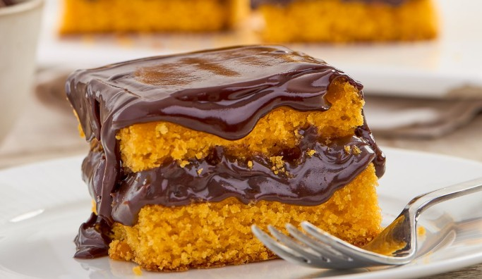
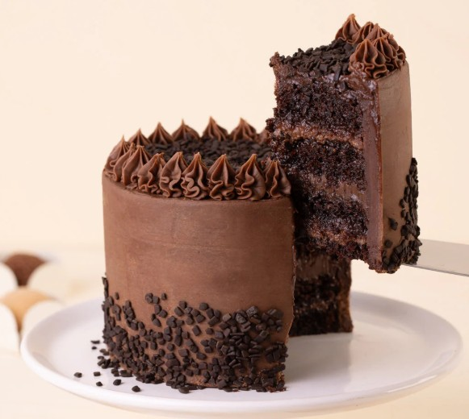
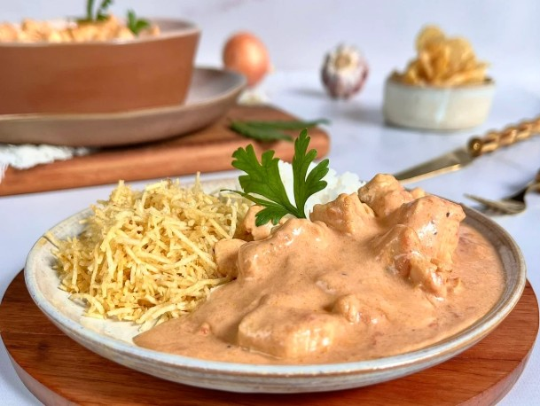

Bolo de Cenoura
Uma receita clássica, simples e muito querida no dia a dia.
Sistemas da informação 8B - TA ACABANDOOOOOOOOOOOOOOOOOO.
Este site foi montado de forma simples e objetiva com orientações do professor Bruno Messias Aguiar para as aulas de frontend que iremos ter a seguir. Aqui você pode acessar três SABOREOSISSIMAS páginas de receitas e voltar para a página inicial quando quiser.
As receitas estão organizadas com listas de ingredientes e etapas, além de imagens para ilustrar cada prato.

Uma receita clássica, simples e muito querida no dia a dia.

Uma opção prática e saborosa para acompanhar o café.

Receita salgada fácil de preparar para o almoço ou jantar.